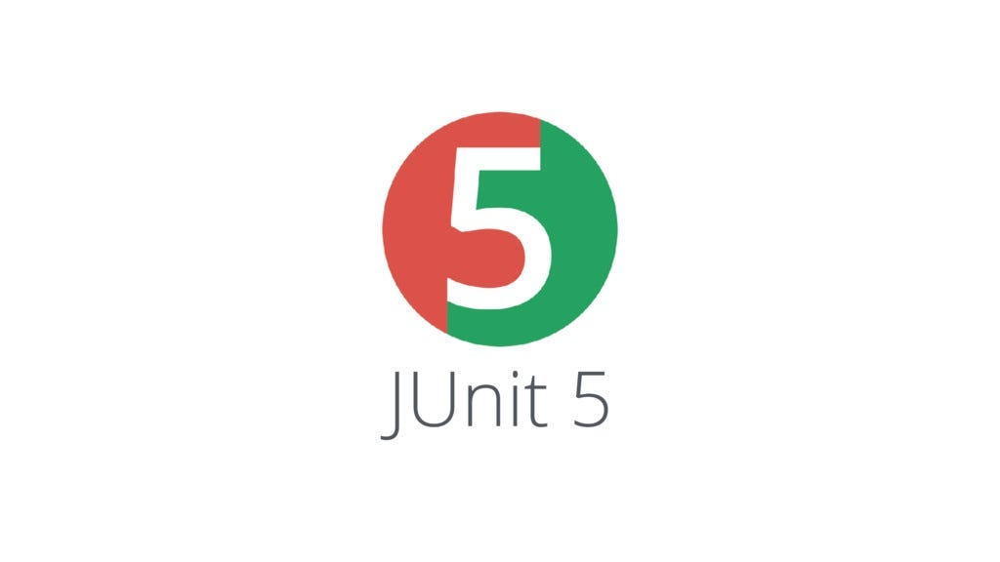

Proyectos

Java
Java Jdbc
Proyecto de Java en el que pongo en práctica la conexión a una base de datos con Jdbc

JUnit & JavaDoc
Pruebas unitarias
Proyecto en equipo en el que hacemos pruebas unitarias con JUnit y documentación con JavaDoc

HTML & CSS

© Web personal para la actividad de Lenguaje de Marcas
CFGS DAW